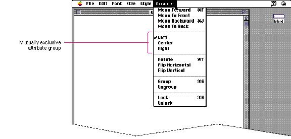
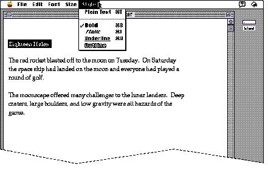
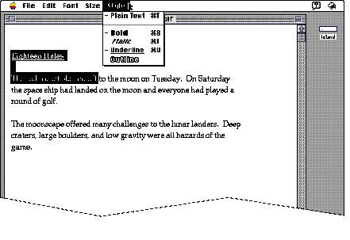
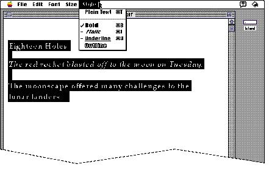

|
Checkmarks and Dashes in MenusCheckmarks indicate a setting that applies to an entire selection. Dashes indicate settings that apply to only part of a selection.In a mutually
exclusive attribute or action group of commands, only one
item is in effect at any one time. (In dialog boxes,
mutually exclusive options are represented by radio
buttons.) In a menu, use a checkmark to indicate the item
that's in effect. For example, the Left, Center, and Right
commands in a graphics menu are a set of three commands,
only one of which can be in effect at any time. A checkmark
indicates which item is in effect for the current
selection. When the user chooses a new menu item, move the
checkmark Figure 4-17 A checkmark to indicate a choice in a mutually exclusive group  In an accumulating
(nonexclusive) attribute group, any number of attributes
can be in effect at the same time. (In dialog boxes, these
options are represented by checkboxes.) Figure 4-18 shows a Style menu when
all Figure 4-18 A checkmark to indicate a choice in an accumulating attribute group  Use dashes to indicate that an attribute applies to only part of the selection. For example, if a selection of text appears in two different styles, display a dash next to each style name. Figure 4-19 shows this state. Figure 4-19 Dashes to indicate partial attributes in an accumulating attribute group  You can use a combination of these marks when appropriate. Figure 4-20 shows an example where the entire selection is bold, part of the selection is also italicized, and part of the selection is underlined. (This technique of using many styles in text is not recommended for best readability.) Figure 4-20 Several attributes in effect  |